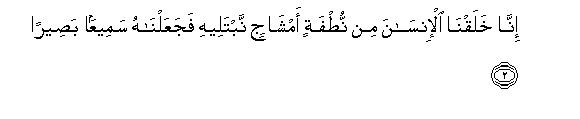
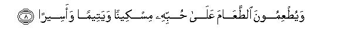
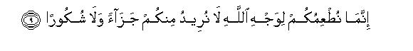
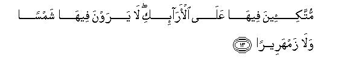
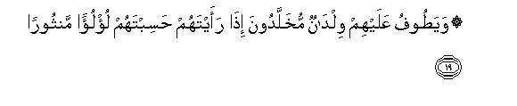
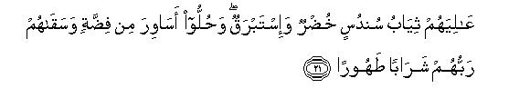
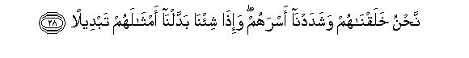
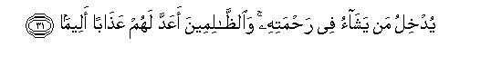

بسم الله الرحمن الرحيم
Sayyid Abul Ala Maududi - Tafhim al-Qur'an - The Meaning of the Qur'an
 76.
Surah Al Insan (Man), also known as Surah Ad Dahr (Time)
76.
Surah Al Insan (Man), also known as Surah Ad Dahr (Time)
This Surah is called Ad-Dahr as well as Al-Insan after the words occurring in the first verse.
Most of the commentators, including Allama Zamakhshari, Imam Razi, Qadi, Baidawi, Allama Nizam ad-Din Nisaburi, Hafiz Ibn Kathir and many others, regard it as a Makki Surah, and, according to Allama Alusi, the same is the opinion of the majority of scholars. However, some commentators hold the view that the Surah was revealed at Madinah, and some others say that it was revealed at Makkah but vv. 8-10 of it were sent down at Madinah.
As far as the subject matter and the style of the Surah are concerned, these are very different from those of the Madani Surahs. A little study of it rather shown that it is not only a Makki Surah but it was revealed during the earliest period at Makkah, which began just after the revelation of the first seven verses of Surah Al-Muddaththir. As for vv 8-10, they are so naturally set in the theme of the Surah that if they are read in their proper context, no one can say that the theme preceding and following them had been sent down 15 to 16 years earlier but these three verses which were revealed many years later were inserted here unnaturally.
In fact, the basis of the idea that this Surah; or some verses of it were revealed at Madinah, is a tradition which has related from Ibn Abbas (may Allah bless him). He says that once Hadrat Hasan and Husain fell ill The Holy Prophet and some of his Companions visited them. They wished Hadrat Ali to make a vow to Allah for the recovery of the two children. Thereupon, Hadrat Ali, Hadrat Fatimah and Fiddah their maid servant, vowed a fast of three days if Allah restored the children to health. The children recovered by the grace of Allah and the three of them began to fast as avowed. As there was nothing to eat in the house, Hadrat Ali borrowed three measures (sa') of barley from somebody (according to another tradition, earned through labor). When on the first day they sat down to eat after breaking the fast, a poor man came and begged for food. They gave all their food to him, drank water and retired to bed. The next day when they again sat down to eat after breaking the fast, an orphan came and begged for something. They again gave away the whole food to him, drank water and went to bed. On the third day when they were just going to eat after breaking the fast, a captive came up and begged for food likewise. Again the whole food was given away to him. On the fourth day Hadrat Ali took both the children with him and went before the Holy Prophet (upon whom be peace). The Holy Prophet (on whom be peace) seeing the weak condition of the three, returned with them to the house of Hadrat Fatimah and found her lying in a corner half dead with hunger. This moved him visibly. In the meantime the Angel Gabriel (peace be on him) came and said; "Look, Allah has congratulated you on the virtues of the people of your house!"When the Holy Prophet asked what it was, he recited this whole Surah in response. (According to Ibn Mahran's tradition, he recited it from verse 5 till the end. But the tradition which Ibn Marduyah has related from Ibn Abbas only says that the verse Wa yut'imun-at ta'am... was sent down concerning Hadrat Ali and Hadrat Fatimah; there is no mention of this story in it). This whole story has been narrated by Ali bin Ahmad al-Wahidi in his Commentary of the Qur'an, entitled Al'Basit, and probably from the same it has been taken by Zamakhshari, Razi, Nisaburi and others.
In the first place, this tradition is very weak as regards its chain of transmission. Then, from the point of view of its subject matter also, it is strange that when a poor man, or an orphan, or a captive, comes to beg for food, he is given all the food. He could be given one member's food and the five of them could share the rest of it among themselves:Then this also is incredible that illustrious persons like Hadrat Ali and Hadrat Fatimah, who possessed perfect knowledge of Islam, should have regarded it as an act of virtue to keep the two children, who had just recovered their health and were still weak, hungry for three consecutive days. Moreover, in respect of the captives also, it has never been a practice under the Islamic government that they should be left to beg for food for themselves. For if they were prisoners of the government, the government itself was responsible to arrange food and clothing for them, and if they were in an individual's custody, he was made responsible to feed and clothe them. Therefore, it was not possible that in Madinah a captive should have gone about begging food from door to door. However, overlooking the weaknesses of transmission and the probability of subject matter, even if the narrative is accepted as it goes, at the most what it shows is that when the people of the Holy Prophet's house acted righteously as they did, Gabriel came and gave him the good news that Allah had much appreciated their act of virtue, for they had acted precisely in the righteous way that Allah had commanded in these verses of Surah Ad-Dahr. This does not necessitate that these verses too were sent down on that very occasion. The same is the case with many traditions concerning the occasion of revelation. When about a certain verse it is said that it was sent down on a particular occasion, it in fact does not mean that the verse was sent down on the very occasion the incident took place. But it means that the verse applies precisely and exactly to the incident. Imam Suyuti in Al-Itqan has quoted this from Hafiz Ibn Taimiyyah: "When the reporters say that a verse was sent down concerning a particular incident, it sometimes implies that the same incident (or matter) occasioned its revelation, and sometimes that the verse applies to the matter although it may not have occasioned its revelation."Further on he quotes Imam Badr ad-Din Zarkashi's view from his Al-Burhan fi Ulum al-Quran:"It is well known in respect of the Companions and their immediate successors that when one of them says that a verse was sent down concerning a particular matter, it means that the ruling contained in it applied to that matter and not that the matter itself occasioned the revelation of the verse. Thus, it only uses the ruling of the verse for the purpose of reasoning and not for stating a fact." (Al-Itqan fi Ulum al-Quran, vol. I, p. 31, Ed. 1929).
The theme of this Surah is to inform man of his true position in the world and to tell him that if he understood his true position rightly and adopted the attitude of gratefulness, he would meet with such and such good end, and if he adopted the way of disbelief, he would meet with such and such evil ends In the longer Surahs of the Qur'an this same theme has been presented at length, but a special characteristic of the style of the earliest Surahs revealed at Makkah is that the subjects dealt with at length in the later period, "have been presented in a brief but highly effective way in this period in such concise, elegant sentences as may automatically be preserved in the memory of the hearers.
In this Surah, first of all man has been reminded that there was a time when he was nothing; then a humble beginning of him was made with a mixed drop of sperm and ovum of which even his mother was not aware; even she did not know that he had been conceived nor anyone else seeing the microscopic cell could say that it was a man, who in future would become the best of creation on the earth. After this, man has been warned, so as to say: "Beginning your creation in this way We have developed and shaped you into what you are today in order to test and try you in the world. That is why, unlike other creatures, you were made intelligent and sensible and were shown both the way of gratitude and the way of ingratitude clearly so that you may show, in the interval that you have been granted here for work, whether you have emerged as a grateful servant from the test or an unbelieving, Un- grateful wretch!"
Then, just in one sentence, it has been stated decisively what will be the fate to be met with in the Hereafter by those who emerged as unbelievers from this test.
After this, in vv. 5-22 continuously, the blessings with which those who do full justice to servitude in the world, will be favored, have been mentioned in full detail. In these verses, not only have their best rewards been mentioned but they have also been told briefly what are the acts on the basis of which they would become worthy of those rewards. Another special characteristic of the earliest Surahs revealed at Makkah is that besides introducing in them briefly the fundamental beliefs and concepts of Islam, here and there, those moral qualities and virtuous acts have been mentioned, which are praiseworthy according to Islam, and also those evils of deed and morality of which Islam strives to cleanse human life. And these two things have not been mentioned with a view to show what good or evil result is entailed by them in the transitory life of the world, but they have been mentioned only to point out what enduring results they will produce in the eternal and everlasting life of the Hereafter, irrespective of whether an evil quality may prove useful or a good quality may prove harmful in the world.
This is the subject matter of the first section (vv. 1-22). In the second section, addressing the Holy Prophet (upon whom be peace), three things have been stated: first, that "it is in fact We Ourself Who are revealing this Qur'an piecemeal to you, and this is intended to inform the disbelievers, not you, that the Qur'an is not being fabricated by Muhammad (upon whom be Allah's peace and blessings) but it is "We Who are revealing it, and it is Our Own wisdom which requires that We should reveal it piece by piece and not all at once."Second, the Holy Prophet has been told: "No matter how long ,it may take for the decree of your Lord to be enforced and no matter what afflictions may befall you in the meantime, in any case you should continue to perform your mission of Apostleship patiently, and not to yield to the pressure tactics of any of these wicked and unbelieving people."The third thing he has been told is: "Remember Allah day and night, perform the Prayer and spend your nights in the worship of Allah, for it is these things which sustain and strengthen those who call to Allah in the face of iniquity and disbelief."
Then in one single sentence, the actual cause of the disbelievers wrong attitude has been stated: they have forgotten the Hereafter and are enamored of the world. In the second sentence, they have been warned to the effect: "You have not come into being by yourself: We have created you. You have not made these broad chests, and strong, sturdy hands and feet for yourselves, it is We Who made these for you; and it so lies in Our power to treat you as We please. We can distort your figures, We can destroy you and replace you by some other nation. We can cause you to die and can recreate you in whatever form We like."
In conclusion, it has been said: This is an Admonition: whoever wills may accept it and take a path to his Lord. But man's own will and desire is not everything in the world. No one's will and desire can be fulfilled unless Allah (also) so wills. And Allah's willing is not haphazard: whatever He wills, He wills it on the basis of His knowledge and wisdom. He admits into His mercy whomever He regards as worthy of His mercy on the basis of His knowledge and wisdom, and He has prepared a painful torment for those whom He finds unjust and wicked.

In the name of Allah, the Compassionate, the Merciful.

[1-3] Has there also passed on man a period of the endless time when he was not yet a thing worthy of mention?1 Indeed, We created man from a mixed sperm drop,2 to try him,3 and therefore We made him capable of hearing and seeing.4 We showed him the way, whether to be grateful or disbelieving.5
[4] For the disbelievers We have prepared chains and collars and a raging Fire.






[5-22] The righteous6 shall drink (in Paradise) cups of wine flavored with camphor-water. It will be a running fountain7 with the waters of which the servants of Allah8 shall drink wine, and shall take out its channels from place to place at will.9 These will be the people who fulfill their vows10 (in the world), and fear the Day whose evil shall be wide-spread, and who feed, out of love for Allah,11 the poor and the orphan and the captive,12 (saying),13 "We are feeding you only for the sake of Allah: we neither seek any reward from you nor thanks.14 We dread from our Lord the torment of the Day, which will be a long, dismal Day of affliction. " So Allah shall save them from the evil of that Day and shall bestow on them freshness and joy,15 and shall grant them Paradise and robes of silk as a reward for their patience.16 There they shall be reclining upon high couches, neither troubled by the heat of the sun nor by severe cold. The shades of Paradise shall cover them all round, and its fruits shall be within their easy reach (so that they may pluck them at will). Vessels of silver17 and goblets of glass shall be passed round to them, goblets made of crystal-clear silver,18 which will have been filled (by the attendants of Paradise) in due measure.19 There they shall be served with cups of wine flavored with ginger. This will be a fountain of Paradise named Salsabil.20 They will be attended by brisk-moving boys who will for ever remain boys. When you see them, you would think they were scattered pearls.21 In whatever direction you may look there, you would see only bliss and the splendor of a great kingdom.22 Upon them shall be the garments of fine green silk and rich brocade.23 They shall be adorned with bracelets of silver,24 and their Lord shall give them a pure wine to drink.25 This is your reward and your endeavors have been appreciated.26


[23-31] O Prophet, it is We Ourself Who have sent down this Qur'an piecemeal to you.27 So be patient with regard to the command of your Lord,28 and do not obey any wicked or disbelieving person from among them.29 Remember the name of your Lord morning and evening, prostrate yourself before Him in the night, and glorify Him during the long hours of night.30 These people only love the quickly attainable (world), and neglect a heavy Day that is coming ahead.31 It is We Who have created them and strengthened their joints, and whenever it be Our will We can change their forms.32 This is indeed an admonition. Now whoever wills, let him adopt the way to his Lord, but you cannot will it unless Allah wills.33 Indeed Allah is All-knowing, All-Wise. He admits into His mercy whomever He wills, and for the wrongdoers He has prepared a painful torment.34
1Most of the commentators and translators have taken hal in the first sentence hal ata alal-insan-i, in the meaning of qad. Accordingly, they interpret this sentence to mean; "No doubt, there has indeed passed on man a time." But, in fact, the word hal in Arabic is used only as an interrogative particle, and its object is not to ask a question in every case, but this apparently interrogative particle is used in different meanings on different occasions. For example, sometimes, in order to find out whether a certain incident has taken place or not, we ask: "Has this thing happened?" Sometimes we do not mean to ask a question but to deny something and we express the denial, thus: "Can any other also do this?" Sometimes we want somebody to affirm something and so ask him: "Have I paid what was due to you? And sometimes we do not intend to have something just affirmed but we put a question in order to make the addressee pay particular attention to something which follows his affirmation as a sequel. For example, we ask someone: "Have I harmed you in any way'?" The object is not only to make him affirm that one has not done him any harm, but also to make him think how far one is justified to harm somebody who has not harmed him in any way. The interrogative sentence in the verse before us illustrates this last meaning. The object is not only to make man affirm that there has indeed passed on him such a period of time but also to make him think that the God Who developed and shaped him into a perfect man from an insignificant, humble beginning, would not be helpless to create him once again.
In the second sentence, hin um-min ad-dahr the word dahr implies the endless time, the beginning and end of which are unknown to man and here is the particular period of tune which might at some time have passed during this endless period. What is meant to be said is that in this immensely long span of time there has passed a long period when human race was altogether non-existent. Then a time came in it when a species called Man was created, and in the same period a time has passed on every person when a beginning was made to bring him into existence from nothingness.
The third sentence, "when he was not yet a thing worthy of mention" implies that a part of him existed in the form of a microscopic gene in the sperm drop of the father and a part in the form of a microscopic ovum in the mother. For long ages man did not even know that he comes into being when the sperm gene and the ovum combine. Now both have been observed by means of powerful microscopes but even now no one can say how much of man exists in the father's germ and how much in the mother's ovum. Then, the initial cell that comes into being by the combination of the two at the time of conception is such an insignificant thing that it can be seen only through highly powerful microscopes and seeing it also no one at first sight can claim that it is a man taking shape, nor that even if a man emerges from this humble beginning, what will be his size and stature, what will be his form and figure, and what will be his capabilities and personality like. This is the meaning of the sentence that at that tithe he was not yet a thing worthy of any mention although a beginning of his being as a man had been made.
2"From a mixed sperm-drop": from the intermingling of the male sperm with the female ovum and not separately from the sperm and the ovum.
3This shows man's real position in the world and the position of the world for man. He is not like the trees and animals that the object of his creation be fulfilled on the earth itself, and he should die and perish here after he has played his appointed role over a period of time according to the law of nature. Furthermore, this world is neither a place of punishment for him, as the monks think, nor a place of rewards as the believers of the law of transmigration think, nor a place of entertainment and enjoyment, as the materialists think, nor a battlefield, as the followers of Darwin and Marx think, but in fact it is a place of test and trial for him. That which he regards as his age, is in fact the time given him for the test. Whatever powers and capabilities he has been given in the world, the thing, that have been placed under his control and authority, the various positions and capacities in which he functions, and the relationships that he enjoys with other men, all these are the countless papers of the test and this test continues till the last breath of his life. The result is not to be announced in this world but in the Hereafter when all his answer-books will have been assessed, decision will be given whether he has come out successful or failed. And his success or failure wholly depends on what he thought of himself while he functioned here and how he answered the papers that were given him here. If he believed that he had no God, or that he was the slave of many gods, and while answering the papers thought that he was not to be held accountable before his Creator in the Hereafter, his whole lifework went wrong. And if he regarded himself as the slave of One God and worked in the way approved by God, with the accountability of the Hereafter always in view, he stood successful in the test. (This theme has occurred at many places in the Qur'an and has been dealt with at length in the corresponding notes. It is not possible to give all the references, but those who are interested in it may see the explanation of it in its different aspects under "Test and Trial" in the Index. In no other book beside the Qur'an has this truth been explained at such length ) .
4The word sami' (hearing) and basir (seeing) in the original actually imply being "sensible and intelligent". These words of the Arabic language are never used in respect of the animal although it also hears-and sees. Thus, hearing and seeing here do not imply the powers of hearing and seeing which have been given to the animals too, but those means through which man obtains knowledge and then draws conclusions from it. Besides, since hearing and seeing are among the most important means of knowledge for man, only these two have been mentioned briefly; otherwise it actually implies giving man all those senses of the body by which he gathers information. Then the senses given to man are quite different in their nature from those given to animals, for at the back of every sense he has a thinking brain, which collects information gained through the senses; arranges it, draws conclusions from it, forms opinions, and then takes some decisions which become the basis of his attitude and conduct in life. Hence, after saying, "We created man in order to try him," to say, "therefore, We made him capable of hearing and seeing¦ actually contains the meaning that Allah save him the faculties of knowledge and reason to enable him to take the test. Obviously, if this were not the meaning and the meaning of making man hearing and seeing just implied the one who could hear and see, then a blind and deaf person would stand exempted from the test, whereas unless a person is utterly devoid of knowledge and reason, there can be no question of his being exempted from the test.
5That is, "We did not just leave him to himself after giving him the powers of knowledge and reason, but We also guided him so that he knows which is the path of gratefulness and which of ungratefulness, so that whichever path he chooses in his later life, he himself is responsible for it. In Surah Al-Balad, the same subject has been expressed, thus "And We showed him both the conspicuous ways (of good and evil)." And in Surah Ash-Shams, thus "By the human self, and by Him Who balanced it (with all the external and internal powers), then inspired it with its wickedness and its piety " When all these explanations are kept in view and also those detailed statements of the Qur'an in which it has been stated what arrangements Allah has made for man's guidance in the world, it becomes evident that in this verse "showing the way" does not imply any one form of guidance but many forms of it which arc limitless and countless. For example.
(1) Along with the faculties of knowledge and reason man has also been endowed with a moral sense by which he discerns between good and evil, regards some acts and qualities as evil even if he himself is involved in them, and regards some other acts and qualities as good even if he himself is avoiding them. So much so that even those people who for the satisfaction of their selfish motives and desires have invented philosophies by which they have justified many evils for themselves, protest loudly when they are themselves treated with the same evils by others, and then it becomes known that in spite of their false philosophies they actually regard them as evil. Likewise, when a man himself is benefited by a good treatment from another person, he is from within forced to commend and appreciate it even though he might be looking upon good acts and qualities as ignorance folly and antiquated things,
(2) In every man Allah has placed the faculty of Conscience (the lawwamah), which checks and pricks him every time he is about to commit an evil, or is in the process of committing it, or has already committed it. However hard man may try to silence his Conscience or make it insensitive, he does not have the power to destroy it completely. He may become shameless and prove himself to be absolutely devoid of the Conscience, he may also try to deceive the world by argumentation, he may even invent a thousand excuses to justify his acts in order to deceive himself, but despite all this the censor that Allah has placed in his nature is so active and powerful that it does not let remain hidden from an evil person what he actually is. This same thing has been stated in Surah Al-Qiyamah, thus: "Man knows his own self best even though he may offer many excuses." (v. 15)
(3) In man's own self and outside him, from the earth to the heavens, there lie scattered in the universe countless such signs which clearly show that all this could not happen without a God, nor could there be many gods to create this life and control and administer it. Likewise, these very signs, inside man and outside him, clearly point also to the Resurrection and Hereafter. If man shuts down his eyes on them, or refuses to ponder over them intelligently, or avoids to admit the truths which they point out, he himself would be to blame. For Allah has shown no negligence in laying out every possible sign of the truth for the guidance of man.
(4) Man does come across in his own life, and in the contemporary world and in the experiences of past history, countless such incidents which prove that a supreme power is ruling over him and the entire universe before whom he is absolutely powerless, whose Will is dominant over everything and whose help he needs at every moment. These experiences and observations which point to the truth do not exist only outside him but in man's own nature as well there exists the evidence of the existence of the supreme power on the basis of which even the most confirmed atheist spreads out his hands in prayer before God when in distress and the most hardened polytheist abandons all false gods and starts invoking One God only for help.
(5) Man's intellect and his nature assert positively that crime ought to be punished and good deeds ought to be rewarded. On this very basis in every society of the world a system of the courts is established in one form or another, and the services and works, which are regarded as commendable are also rewarded in one way or another. This is a clear proof of the fact that there is a necessary relationship between morality and the law of retribution, which man cannot possibly deny. Now, if it is admitted that in this world there are countless such crimes which cannot be punished at all. to say nothing of punishing them fully and adequately, and there are also countless such virtues, which cannot be rewarded at all, to say nothing of rewarding them fully and adequately, there is no alternative but to acknowledge the Hereafter, unless, of course, a foolish person may assume, or a stubborn person may insist on having the opinion, that man who has been endowed with the concept of justice, has taken birth in a world which in itself is devoid of the concept of justice; and then it remains for him to answer the question as to how and where from this man, who was born in such a world, obtained this concept of justice.
To reinforce these means of guidance Allah sent Messengers and revealed Books in the world for the purpose of giving clear and definite guidance to man; in these Books it was clearly explained what is the way of gratefulness and what is the way of ungratefulness and unbelief and what will be the consequences of following either way. The teaching brought by the Prophets and the Books has spread throughout the world in countless perceptible. and imperceptible ways, on such a large scale that no section of human population has remained unaware of the concept of God and the Hereafter, of the distinction between good and evil, and of the moral principles and legal rulings presented by them, whether it knows or does not know that it has obtained this knowledge only through the teachings of the Prophets and the Books they brought. Even those who disbelieve in the Prophets and the Books today, or are unaware of them, also are following many of those things which have reached them actually through their teachings while they do not know what is the real source of these teachings.
6The word abrar as used in the original implies the people who have done full justice to their Lord's obedience, have carried out the duties enjoined by Him and abstained from the things forbidden by Him.
7That is, it will not be camphor-mixed water but a natural fountain, the purity, coolness and agreeable odor of whose water will resemble camphor.
8Although the words 'ibad Allah (servants of Allah), or `ibad ar-Rehman (servants of Rehman), can be used for all then literally, for every human being is God's servant, yet wherever these words occur in the Qur'an they only imply the righteous men. In other words, the wicked ones who have excused themselves from Allah's servitude do not deserve that Allah should honor them with the honorable title of ibad-Allah or ibad ar-Rehman, attributing them to His own Holy Name.
9It does not mean that they will use spades and shovels to dig out its channels and will take out its branches whither so ever they please, but that their one single command and desire will be enough to cause a fountain to gush forth from wherever they please in Paradise.
10One meaning of fulfilling the vow is that one should fulfill, second, that one should fulfill what one has pledged oneself to do, third, that one should fulfill what one has been enjoined; what is obligatory for one to do, whether one has been enjoined it, or is self-imposed. Of these three the second meaning is the best known and generally the same is implied by fulfilling the vow. In any case, these righteous people have been regarded as praiseworthy either because they carry out the duties enjoined by Allah, or because if they vow to Allah to perform certain good deeds which Allah has not enjoined on them, they fulfill even those self imposed vows, not to speak of showing any negligence,in carrying out the duties which Allah has actually enjoined on them.
As for the commandments concerning the vow, we have explained these briefly in E.N. 310 of Surah Al-Baqarah above, But it would be useful to explain them at length here so as to enable the people to avoid the errors and rid themselves of the misunderstandings with regard to fulfilling the vow and learn the correct rules pertaining to it.
(1) The jurists have mentioned four kinds of the vow: (a) that one should pledge to Allah that one would perform such and such a good act to earn His good pleasure; (b) that one should make a vow that one would perform such and such a good act in gratitude to Allah if He fulfilled one's such and such wish and desire. Both these kinds of the vow have been termed nadhr tabarrur (i.e. vows for a good cause) by the jurists, and it is agreed by all that it is obligatory to fulfill them. (c) That one should pledge to do an unlawful thing or to refrain from an obligatory thing; (d) that one should bind oneself to do a permissible thing, or to refrain from an obligatory thing, or pledge to do an unworthy thing. These two kinds of the vow have been termed nadhr lajaj (i.e. vow of ignorance, disputation and stubbornness) by the jurists. About the third kind of the vow it is agreed that it does not take place at all; and about the fourth kind the juristic opinion is divided. Some jurists say that it should be fulfilled; some others say that one should expiate the breaking of the oath, and still others that one has the option to fulfil the vow or to expiate it. According to the Shaf is and the Malikis this vow does not take place at all, and according w the Hanafis both these kinds of the vow entail expiation. (`Umdat al-Qari)
(2) Several Ahadith show that the Holy Prophet (upon whom be peace) has forbidden making a vow with a view to changing the destiny, or with a view to making an offer to Allah that if He fulfilled one's such and such wish, one would perform such and such good act, not in gratitude to Allah, but in exchange for His ,help. Hadrat `Abdullah bin `Umar has reported that once the Holy Prophet (upon whom be peace) while he forbade the making of a vow, said; "It cannot avert anything which is about to befall, but through it something is extracted from the miserly person." (Muslim, Abu Da'ud), The last sentence of the Hadith means: The miserly person is not prone to spend anything in the cause of Allah; because of the vow he gives away something in charity in the greed that Allah would accept his offer and change his destiny for him. Another tradition from Hadrat `Abdullah bin 'Umar is to the effect; "The Holy Prophet said: the vow can neither hasten anything nor defer anything, but through it something is extracted from the miserly person. " (Bukhari, Muslim). In another tradition he says that the Holy Prophet forbade making of the vow and said: "It does not bring any good, but it is a means whereby something is extracted from the miserly person." (Bukhari, Muslim). Several traditions on the same subject have been related by Muslim from Hadrat Abu Hurairah, and in one tradition which both Bukhari and Muslim have related, he reports that the Holy Prophet said: "As a matter of fact, the vow cannot bring the son of Adam anything which Allah has not ordained for him, but the vow sometimes coincides with the destiny itself and through it the Divine will takes out from the possession of the miserly person that which he was not inclined to give away willingly." This same theme is further explained by the tradition of Hadrat `Abdullah bin `Amr bin `As according to which the Holy Prophet (upon whom be peace) said: "True vow is that whereby Allah's goodwill and approval may be sought. " ( Tahavi)
(3) Another rule that the Holy Prophet (upon whom be peace) gave concerning the vow is that only that vow should be fulfilled, which is in obedience to Allah; the vow made in disobedience to Allah should never be fulfilled. Likewise, there can be no vow concerning a thing which is not in one's power to perform. Hadrat `A'ishah has reported that the Holy Prophet said: "The one who made a vow that he would obey Allah, should obey Him, and the one who made a vow that he would disobey Allah, should not disobey." (Bukhari, Abu Da ud Tirmidhi, Nasa'i, lbn Majah, Tahavi). Thabit bin Dahhak says that the Holy Prophet (upon whom be peace) said: "There can be no question of fulfilling a vow made in the disobedience of Allah, nor in something which is not in one's possession." (Abu Da'ud). Muslim has related a tradition on the same subject from Hadrat `Imran bin Husain; and in Abu Da'ud a tradition has been reported in greater detail from Hadrat `Abdullah bin `Amr bin `As, saying that the Holy Prophet said: "No vow and no oath is of any use in an act which is not in the power of man to perform, or which involves disobedience of Allah, or severance of relations with kindred."
(4) One should not fulfill a vow which is made to perform an act which is of no good in itself, which is useless, or involves unbearable hardship or self-torture, and might have been self-imposed as an act of virtue. In this connection, the sayings of the Holy Prophet (upon whom be peace) are very clear and definite. Hadrat `Abdullah bin `Abbas says that once when the Holy Prophet was giving a sermon, he saw a man who was standing in the sun. He asked who he was and why he was standing in the sun. The people said that he was Abu Isra'il: he had vowed that he would keep standing and would not sit, nor take shade, nor speak to anybody, and would keep fast. Thereupon the Holy Prophet said: "Tell him to speak, to come in the shade and sit, but to observe the fast." (Bukhari, Abu Da'ud, Ibn Majah, Mu'watta). Hadrat `Uqbah bin `Amir Juhani says: "My sister vowed that she would go for Hajj bare-foot and also vowed that she would not cover her head with a garment during the journey. The Holy Prophet said: Tell her to go by a conveyance and to cover 'her head." (Abu Da'ud). Muslim has related several traditions on this subject with a little variation in wording. Hadrat `Abdullah bin `Abbas reporting the incident concerning `Uqbah bin `Amir's sister, has reported the Holy Prophet's words to the effect: "Allah has no need of her vow: tell her to use a conveyance." (Abu Da'ud). In another tradition Hadrat Ibn `Abbas says "A man said: My sister has vowed to go and perform Hajj on foot. The Holy Prophet replied: Allah has no need that your sister should undergo hardship. She should go for Hajj by a conveyance." (Abu Da'ud). Hadrat Anas bin Malik has reported that the Holy Prophet saw (probably during the Hajj journey) an old man being supported between his two sons. When he asked what was the matter with him, it was said that the old man had vowed to go on foot. Thereupon the Holy Prophet said: "Allah is free from this that the man should place himself in agony. Then he commanded him to ride." (Bukhari, Muslim, Abu Da'ud. In Muslim another Hadith on this very subject has been reported by Hadrat Abu Hurairah also).
(5) If it is not practically possible to fulfill a vow, it may be fulfilled in some other way. Hadrat Jabir bin `Abdullah says: "On the day of the conquest of Makkah, a man stood up and said: O Messenger of Allah, I had vowed that if Allah made Makkah fall at your hand, I would pray two rak ahs of the Prayer in Bait al-Maqdis (Jerusalem). The Holy Prophet replied: Say the Prayer here. He again asked the same thing and the Holy Prophet again gave the same reply. When he asked it again, the Holy Prophet said: All right, as you please." According to another tradition, the Holy Prophet said: "By Him Who has sent Muhammad (upon whom be Allah's peace and blessings) with the truth, if you pray here it will suffice for you instead of your praying at Bait al Maqdis (Abu Da'ud)."
(6) The opinion among the jurists is divided concerning the person who vows to give away all his possessions for the cause of Allah. Imam Malik says that he should give away one-third of his possessions, and Sahnun from among the Malikis has expressed the opinion that he should give away so much of his possessions as does not subject him to hardship later. Imam Shafe`i says that if the vow is of the nature of tabarrur(i.e. for a good cause), he should give away all his possessions, and if it is of the nature of lajaj (i.e, a vow of ignorance), he has the option to fulfill the vow or to expiate the oath. Imam Abu Hanifah says that he should give away all such possessions as are subject to zalrat, but the vow will not apply to those possessions which are exempt from zakat, e.g. house, or other such properties. Imam Zufar from among the Hanafis is of the opinion that he should give away everything in charity after he has taken out two months' maintenance for his family. ( `Umdat al-Qari, Sharh Mu'watta by Shah Waliyullah). Traditions of the Hadrat in this connection are as follows.
Hadrat Ka'b bin Malik says: "When I was granted forgiveness for incurring Allah's displeasure for staying behind on the occasion of the Battle of Tabuk, I went before the Holy Prophet (upon whom be peace) and submitted: My repentance also included that I would give away all my possessions in charity for the sake of Allah and His Messenger. The Holy Prophet replied: No, do not do that. I said. Then half of the possessions? He said: No. I said: Then one-third of the possessions? He replied: Yes." (Abu Da'ud). According to another tradition, the Holy Prophet replied: "Withhold some of your possessions for yourself: this would be better for you." (Bukhari), Imam Zuhri says: "Information has reached me that Hadrat Abu Lubabah (who had similarly incurred displeasure in connection with the same Battle of Tabuk) said to the Holy Prophet: "I shall give away all my possessions for the sake of Allah and His Messenger in charity. The Holy Prophet replied: For you it would be enough to give away only one-third of it." (Mu'watta).
(7) Should a person who vowed to perform a good act before embracing Islam, fulfil it after he has embraced Islam? The Holy Prophet's ruling in this connection is that he should fulfil it. (Bukhari; according to a tradition in Abu Da ud and Tahavi Hadrat `Umar is reported to have vowed in the pre-Islamic days that he would observe i `tikaf(devotional seclusion) in the Masjid al-Haram (for one night, or according to others, one day). After embracing Islam when he asked for the Holy Prophet's ruling, he replied: "Fulfill your vow." Some jurists have taken this ruling of the Holy Prophet to mean that it is obligatory to do so, and some others that it is commendable.
(8) About the question whether the heirs are under obligation to fulfill a vow made by the deceased person or not, the juristic opinion is divided. Imam Ahmad, Ishaq bin Rahawaih, Abu Thaur and the Zahiris say that if the deceased person had vowed to observe the Fast or perform the Prayer but could not fulfill the vow, the heirs have to fulfill it. The Hanafis say that if the vow pertained to a bodily worship (e.g. the Prayer or the Fast), the heirs are under no obligation to fulfill it, and if it pertained to monetary worship and the deceased did not leave any will for his heirs to fulfill it, they are again under no obligation to fulfill it. but if he left a will, it will be obligatory for the heirs to fulfill it from his inheritance up to one-third of its extent. The Maliki viewpoint also is somewhat the same. The Shafe`is say that if the vow pertains to a non-monetary worship, or if it pertains to a monetary worship and the deceased person did not leave any inheritance, the heirs are under no obligation to fulfill it; and if the deceased left some inheritance, the heirs would be bound to fulfill the vow pertaining to a monetary worship, no matter whether the dying person left a will or not. (Sharh Muslim by AI-Nawawi, Badhl al-Majhud Sharh Abi Da ud). In the Hadith there is a tradition from Hadrat `Abdullah bin `Abbas on this subject to the effect: "Hadrat Sa`d bin `Ubadah asked for the Holy Prophet's verdict, saying: My mother has died and she had made a vow which she could not fulfill. The Holy Prophet said: Fulfill the vow on her behalf." (Abu Da'ud. Muslim). Another tradition from Ibn `Abbas is to the effect: "A woman went on a sea journey and vowed that if she returned home safe and sound, she would observe fast for a month. On her return home she died. Her sister or her daughter came to the Holy Prophet to ask for his decision. The Holy Prophet replied: "Observe the fast on her behalf." (Abu Da'ud Abu Da'ud has related another tradition with the same content from Hadrat Buraidah, saying: "A woman asked the Holy Prophet a similar thing and he gave the same reply as mentioned above." Since these traditions are not explicit as to whether the rulings the Holy Prophet gave pertained to its being obligatory or commendable, and since about the vow made by Hadrat Sa`d bin `Ubadah's mother also it is not clear whether it pertained to a monetary worship, or a bodily worship, there have arisen differences among the jurists on this question.
(9) As for an unlawful vow it is clear that it should not be fulfilled. However, there is a difference of opinion as to whether it entails an expiation or not. On this point since the traditions differ the juristic opinion is also divided. According to one kind of the traditions the Holy Prophet commanded the person concerned to make the expiation. Hadrat `A'ishah has reported that the Holy Prophet said: "Three is no vow in the disobedience of Allah, and its expiation is the expiation of breaking the oath" (Abu Da'ud, In the case of `Uqbah bin `Amir Juhani's sister (mentioned under No. 4 above), the Holy Prophet (upon whom be peace) commanded that she should break her vow and fast for three days. (Muslim, Abu Da'ud). In the case of another woman also who had vowed to go for Hajj on foot, he commanded that she should go by a conveyance and should make expiation for the oath (Abu Da'ud). Ibn `Abbas has reported that the Holy Prophet said: "The one who made a vow but did not specify what the vow was about, should expiate for the oath, and the one who made a vow to perform a sinful act, should expiate for the oath, and the one who made a vow to perform something which he does not have the power to perform, should expiate for the oath, and the one who made a vow to do something which he can do, should fulfill it." (Abu Da'ud). On the other hand, there are the traditions which show that there is no expiation in this case. The person under No.4 above had vowed that he would stand in the sun and would not speak to anyone. Making a reference to him in Mu'watta, Imam Malik writes: "I could not know by any means whether the Holy Prophet besides commanding him to break the vow might also have told him to make the expiation. Hadrat `Abdullah bin `Amr bin `As has reported that the Holy Prophet said: "If the one swearing an oath for something later finds that another thing was better than that he should abandon it and should adopt the better course and the abandonment itself is the expiation." (Abu Da'ud; Baihaqi says that this Hadith and Hadrat Abu Hurairah's this tradition: "He should adopt the better course and this is its expiation" are not established). Imam Nawawi discussing these traditions of the Hadid in his commentary of Sahih Muslim writes: "Imam Malik, Shafe`i, Abu Hanifah, Da'ud Zahiri and other scholars say that the vow made to do a sinful thing is void and ineffectual and it does not entail any expiation if not fulfilled, but Imam Ahmad says that it entails expiation."
11Most of the commentators hold the view that the pronoun in hubbi-hi refers to food. Accordingly, they interpret the sentence to mean: "In spite of the food's being agreeable and tasty and that they need it, they give it away to others." Ibn `Abbas and Mujahid say: "they do so because of their fondness for feeding the poor ( `ala hubb-il-it am); and Fudail bin `Iyad and Abu Suleman ad-Darani say: "They do so out of love for Allah." In our opinion the following sentence ("We are feeding you only for the sake of Allah") supports the last meaning.
12The custom in the ancient days was that the prisoners were put in fetters and shackles and taken out daily to go about the streets begging food. Later the Islamic government abolished this custom. (Imam Abu Yusuf, Kitab al-Kharaj, p, 150, Ed, 1382 H. ) In this verse, the captive implies every such person who is in bondage, whether he is an unbeliever, a Muslim, a war prisoner, or imprisoned in consequence of a crime, and whether he is provided food in that state, or made to beg for it. In any case, to feed a helpless person who cannot do anything to earn a living, is an act of great virtue.
13Although feeding a poor man is in itself a great virtue, yet fulfilling the other needs of an indigent person is no less virtuous. For example, to clothe a poor man, to arrange treatment for a sick person, or to help a debtor who is harassed by his creditor, is an act of equally great virtue. Here, a particular kind of virtue in view of its importance has been presented only as an example, but the real object is to stress giving help to the needy.
14It is not necessary that this may be said in so many words while feeding the poor man. It may be said in the heart; in the sight of Allah this is as meritorious as saying it with the tongue. But saying these words with the tongue has been particularly mentioned so as to set the person being helped at ease that no thanks or recompense is due from him, so that he eats with full satisfaction and peace of mind.
15"Freshness and joy": freshness of the face and joy of the heart. In other words, all the severities and terrors of the Day of Resurrection will be meant only for the disbelievers and the culprits. The righteous will on that Day remain immune from every hardship and will be well-pleased with their lot. The same theme has been expressed in Al-Anbiya': 103, thus: "The time of great fright will not trouble them at all; the angels will rush forth to receive them, saying: this is the Day that you were promised; and in An-Naml: 89 thus: "He who brings good deeds, will have a reward better than that, and such people shall be secure from the terror of that Day. "
16Here the word sabr (patience) has been used in a very comprehensive sense. The whole worldly life of the righteous believers in fact has been described as a life of patience. From the time a man attains discretion, or believes, till death;' his suppressing of unlawful desires, adhering to the bounds set by Allah, carrying out the duties enjoined by Him, sacrificing his time, his wealth, his effort, powers and abilities, even his life if so required, ignoring every greed and temptation, which might turn him away from Allah's way, meeting every danger and enduring every hardship faced on the way of the truth, giving up every gain and pleasure accruing from unlawful ways and means, bearing every loss and suffering and affliction incurred on account of his love for truth, and doing all this with full faith in the promise of Allah that He will bless the doer with the fruits of this righteous conduct not in this world but in the second life after death, turns the whole life of a believer into a life of patience-eternal and perpetual patience. all-pervasive and life-long patience! (For further explanation, see E N 60 of Al-Baqarah. E.N.'s 13, 107, 131 of ,AI-`Imran, E.N. 23 of Al-An`am, E.N.'s 37, 47 of Al-Anfal, E.N. 9 of Yunus, E N 11 of Hud, E.N. 39 of Ar-Ra'd, E.N. 98 of An-Nahl, E.N. 40 of Maryam, E.N: 94 of AI-Furgan, E.N.'s 75, l00 of AI-Qasas. E.N. 97 of Al-`Ankabut, E.N.'s 29, 56 of Luqman, E.N. 37 of As-Sajdah, E.N. 58 of Al-Ahzab, E.N. 32 of Az-Zumar, E.N. 38 of Ha-Mim As-Sajdah, E.N. 53"of Ash-Shura).
17According to Az-Zukhruf: 71, vessels of gold shall be passed round to them, but here of silver. This shows that vessels of gold as well as of silver shall be passed round to them as required by the occasion.
18That is, though silver, it will be as transparent as glass, Vessels of this kind of transparent, crystal like silver will be the special characteristic of the vessels in which drinks will be served to the people of Paradise.
19"In due measure": filled accurately according to the desire of every person, neither over-filled nor under-filled. In other words, the attendants of the dwellers of Paradise will be so judicious and discerning that they will have accurate judgment about everybody whom they serve wine as to how much of it he wishes to drink. (For the characteristics of the wine of Paradise, see As-Saaffat: 45-47 and the E.N.'s 24 to 27, Muhammad: 15 and E.N. 22, At-'tur; 23 and E.N. 18, Al-Waqi`ah: 19 and E.N. 10).
20This is to suit the taste of the Arabs who liked the wine flavored with ginger-mixed water. But this flavoring will not be achieved by adding ginger-mixed water to it: it will be a natural fountain which will have the flavor of ginger but without its bitterness; Therefore, it will be called Salsabil, which implies such water as flows gently and pleasantly down the throat on account of its being sweet, light and palatable. Most commentators think that the word salsabil has been used here as an adjective of the fountain and not as a name for it.
21For explanation, see E.N. 26 of As-Saaffat, E-N. 19 of At-Tur, E.N. 9 of Al-Wiiqi`ah.
22Even if a person might have lived a pauper in the world, in the Hereafter when he is admitted to Paradise, on the basis of his good deeds, he will live as though he were the owner of a splendid kingdom.
23This same theme has been expressed in Surah Al-Kahf: 31, thus: "They (the dwellers of Paradise) will wear colored robes of silk and rich brocade and will be reclining upon raised thrones.” On this basis, the opinion of the commentators who have expressed the view that this implies the sheets of cloth which will be hanging over their thrones or bedsteads or that this would be the dress of the boys who would be moving about serving them does not seem to be correct.
24In Surah Al-Kahf: 31, it has been said: "They will be adorned with bracelets of gold. This same theme has also occurred in Al-Hajj: 23 and Fatir 33 above. When all these verses are read together, three possibilities become obvious,
(1) That sometimes they would 1ike to wear bracelets of gold and sometimes bracelets of silver, both kinds of the ornaments being available for use as and when required;
(2) that they will wear bracelets of both gold and silver at the same time, for the combination of the two enhances the personal charms of the wearer;
(3) that whosoever desires will wear bracelets of gold and whosoever desires will wear bracelets of silver.
As for the question, why will the men be adorned with the ornaments when these are usually worn by the women? The answer is that in the ancient times the custom was that the kings and their nobles used to adorn their hands and necks and the crowns of their heads with different kinds of ornaments. In Surah Az-Zukhruf it has been said that when the Prophet Moses arrived in the Pharaoh's court in his simple dress, with only a staff in hand, and told him that he was a Messenger sent by Allah, Lord of the worlds, the Pharaoh said to his courtiers: "What kind of a messenger is he, who has appeared before me in this state? If he was sent by the King of the universe, why were not bracelets of gold sent down on him, or a company of angels as attendants?" (v. 53).
25Two kinds of the wine have been mentioned above, first that to which water will be added from the fountain of camphor; second that to which water will be added from the fountain of ginger, After these, making mention of another wine, with the' remark that their Lord shall give them a pure wine to drink, gives the meaning that this will be some superior kind of wine, which they will be given to drink as a special favor from Allah.
26In the original, kana sa yu kum mashkura: "your endeavors have been accepted and recognized." Sa`i implies the entire lifework that a person accomplished in the world, the works and objectives to which he applied his energies and abilities; and its being mashkur means that Allah has appreciated it. Shukr when expressed by the servant to God implies his gratefulness to Him for His blessings, and when it is expressed by God for the servant, it means that He has appreciated his services. It is indeed highly kind of the Master that He should appreciate the endeavors of the servant when the servant has only carried out his duties according to the Master's will.
27Though the addressee here apparently is the Holy Prophet (upon whom be peace), the discourse is directed to the disbelievers, who said "Muhammad (upon whom be Allah's peace and blessings) himself composes the Qur'an deliberately piece by piece; had it been from Allah, it would be revealed all at once. At some places on the Qur'an this objection bas been cited and answered (e.g. see E.N.'s 102, 104, 105, 106 of An-Nahl and E.N. 119 of Bani Isra'il), but here Allah has answered it without citing it, saying emphatically: "It is We Ourself Who are sending it down: it is not the composition of Muhammad: and it is We Ourself Who are sending it gradually. That is, it is the requirement of Our wisdom that We should not send down Our message all together in book form, but should send it piece by piece."
28"Be patient": "Face patiently the hardships and difficulties of the great Mission your Lord has entrusted to you: endure firmly and steadfastly whatever comes to pass, without showing any weakness in this regard."
29"Do not obey ...": "Do not yield to any one of them so as to give up preaching of the true faith: do not be inclined to make even the least change in the religious beliefs for the sake of any denier of the Truth, or in the moral teachings for the sake of a wicked person. Proclaim whatever is unlawful and forbidden to be so openly even if an immoral person might press you hard to show some lenience in this condemnation, and proclaim whatever is false as false and whatever is we as true publicly even if the disbelievers might use all their influence to silence you, or to make you adopt a little lenience in this regard."
30The rule followed in the Qur'an is that wherever the Muslims have been exhorted to show patience against the disbelievers, immediately after it they have been commanded to remember Allah much and to observe the Prayer, which automatically implies that the power needed to meet the resistance of the enemies of the Truth in the way of truth faith can be obtained only by this means. To remember Allah morning and evening may also imply remembering Allah always but when the command to remember Allah at specific times is given, it implies the salat (Prayer). In this verse, bukrah means the morning and asil the time from the sun's decline till sunset, which obviously covers the Zuhr and the Asr times. Night starts after sunset;. therefore, the command "to prostrate yourself in the night" would apply to both the Maghrib and the `Isha' Prayers. Then, the command "to glorify Allah in the long hours of night", clearly points to the time of the Tahajjud Prayer. (For further explanation, see E.N.'s 92 to 97 of Bani Isra'il, E N. 2 of AI-Muzzammil). This also shows that these very have been the Prayer times in Islam from the beginning. However, the command making the Prayer obligatory five times a day with fixed tunes and number of rakahs was given on the occasion of mi`raj (ascension).
31That is, "The reason why the disbelieving Quraish still persist in the errors and deviations of belief and morality and why they turn a deaf ear to your invitation to the Truth is, in fact, their worship of the world and their heedlessness of the Hereafter. Therefore, the way being followed by a true God-worshiper is so different from and opposed to their way that there can be no question of any compromise between them. "
32The sentence, "Whenever it be Our will We can change their forms¦, can have several meanings:
(1) That whenever We please We can destroy them and replace them by other people of their own kind, who will be different from them in conduct;
(2) that whenever We please We can change their forms; that is, just as We can make someone healthy and sound in body, so also We have the power to make somebody a paralytic, cause someone to be struck with facial paralysis and other to fall a victim to some disease or accident and become a cripple permanently; and
(3) that whenever We will We can recreate them in some other form after death.
33Three things have been said in these verses:
(1) That whoever wills may adopt the way to his Lord;
(2) that one's willing to do a thing is not enough unless Allah so wills; and
(3) that Allah is All-Wise, All-Knowing. If one considers these three things deeply one can fully well understand the relationship between man's freedom of choice and Allah's Will, and it helps to remove all the confusions from the people's minds about the question of destiny.
The first verse shows that in this world the authority granted to man is only to the extent that he may decide to adopt any one of the different courses available for passing life here. This is the freedom of choice that Allah has given him. For example, when a man confronts the question of earning a living for himself, he finds many ways before him of which some are lawful, as for example lawful kinds of labor, service, trade and business, industry, or agriculture, and some are unlawful as thievery, robbery, picking pockets, prostitution, trading in money (on interest), gambling, bribery and unlawful kinds of services and business, etc. The decision to adopt any one of these ways has been left to man's own free choice as to how he would like to earn his living. Likewise, there are different modes of morality. On the one side, there are the good qualities, like honesty, nobility, decency, justice, pity, sympathy and chastity, and on the other, the evil traits like wickedness, meanness, tyranny, dishonesty, and frivolity. Man has full freedom to adopt any mode of morality he likes. The same is the case with religion; man has many ways open before him in this regard also-atheism and denial of God, polytheism and idol-worship, different combinations of monotheism and polytheism, and the un-alloyed creed of God-worship which is taught by the Qur'an. In these also the decision to choose has been left to man as to which of these he wants to adopt. Allah does not impose on him any decision of His own so that man may like to choose a lawful means of earning his living for himself but Allah may force him to adopt an unlawful means for it. or that he may like to follow the Qur'an, but Allah may force him to become an atheist, polytheist or disbeliever, or that he may like to become a good man, but Allah may force him to become an evil man.
But after man has exercised this freedom of choice whether he can practically also do the same which he wants to do, depends on Allah's Will, His leave and His grace. If the Will of Allah be to let the man do what he has willed or decided to do, then alone can he do it; otherwise he cannot do anything without Allah's Will and His leave, however hard and seriously he may try to do it. This same thing has been said in the second verse. This can be explained by an example. If man had been delegated all the powers in the world and permitted to do whatever he pleased, the system of the world would have been disrupted. One murderer was enough to murder all the, people in the world if he were given the freedom to kill anybody he liked. One pickpocket could pick the pocket of everyone if he were given the option to pick anyone's pocket he pleased. One thief was enough to steal whatever he liked; one adulterer to commit rape on every woman, one robber to plunder every house, if each one of these had full powers to act at he desired. Therefore, Allah has kept this in His own power whether He may allow or disallow the man to follow the right or the wrong path that he chooses to follow or not. The person who, giving up error, wants to adopt the right way is also granted righteousness only by Allah's leave and will. However, the condition is that the decision to give up error and choose guidance should have been taken by the man himself; otherwise just as Allah does not make anybody a thief or murderer or atheist or polytheist forcibly, so also He does not make anybody a believer forcibly.
After this, the third verse removes the misunderstanding whether Allah's willing may not be arbitrary. That is why it has been said that "Allah is All-Knowing, Al-Wise." That is whatever He does, He does it on the basis of knowledge and wisdom; therefore, there can be no possibility of any error in His decisions. He decided with full knowledge and wisdom as to who should be given a particular kind of help and who should not be given it, who should be allowed to do a particular work and who should not be allowed to do it. To the extent that Allah provides opportunities to man and makes the conditions favorable for him, he can work according to his desire, whether it be good or evil, The question of guidance also is no exception to it. Allah alone knows on the basis of His knowledge and He alone determines on the basis of His wisdom as to who deserves to be guided and who does not. (Also see E.N. 41 of Al-Muddaththir
34In this verse "wrong doers" imply the people whom the Revelations of Allah and the teachings of His Prophet may reach, yet they deliberately and consciously decide that they would not obey and follow them. This also includes those unjust people who may plainly say that they do not accept the Revelation as God's Revelation and the Prophet as God's Prophet, or that they do not believe in God at all, and also those wicked people who may not refuse to believe in God and the Prophet and the Qur'an, but they are resolved not to obey and follow them. As a matter of fact, both these groups are unjust and wicked. As regards the first group, their case is clear and obvious; but the second group is no less wicked: it is also hypocritical and treacherous. Verbally they say that they believe in God and the Messenger and the Qur'an, but in their hearts and minds they are resolved not to follow them, and their practical conduct of life is also opposed to it. About both Allah has declared that He has prepared for them a painful torment. They might strut about in the world, enjoy life as they like, boast and brag of their superiority, but ultimately they will be subjected to a disgraceful punishment; they cannot enter and enjoy Allah's mercy in any way.